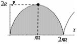

24.1.3. Вычисление площадей фигур, граница которых задана кривыми в
параметрической форме
Пусть кривая задана параметрическими уравнениями:
;
Вычисление площади
фигуры, границы которой заданы в параметрической форме
.
Вычислить площадь эллипса.
Уравнения эллипса в параметрической форме имеют вид: , .
Решение:

Найти площадь фигуры, ограниченную первой аркой циклоиды ; и
отрезком оси абсцисс.
Решение:
Точкам  и
и  соответствуют значения параметра и ,
поэтому искомая площадь равна
соответствуют значения параметра и ,
поэтому искомая площадь равна
и соответствуют значения параметра и ,
поэтому искомая площадь равна